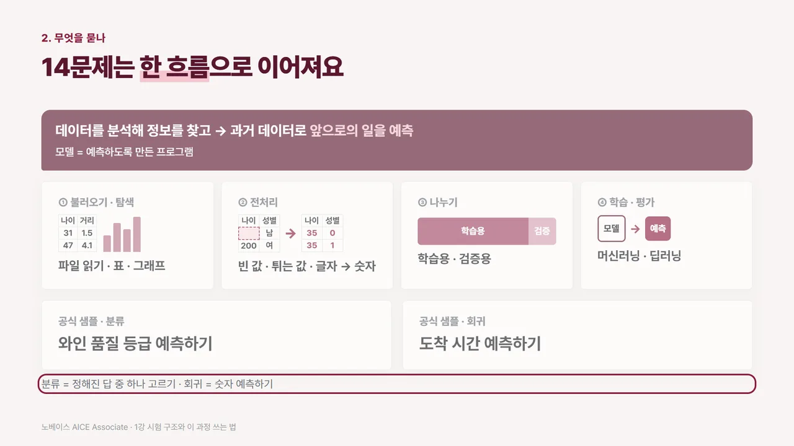
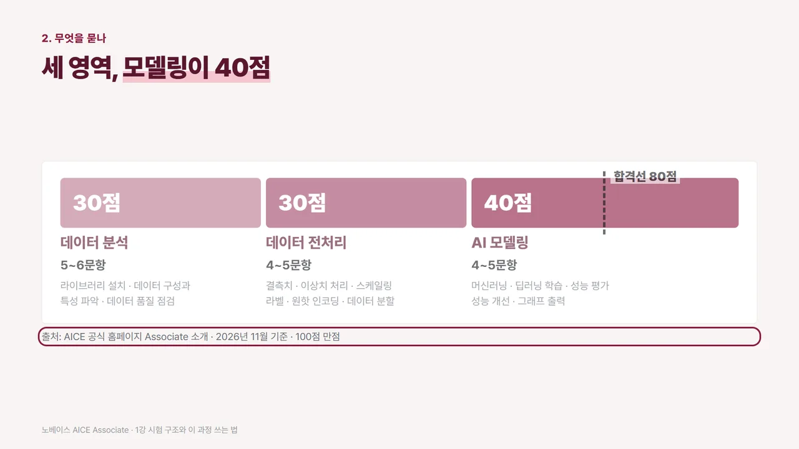
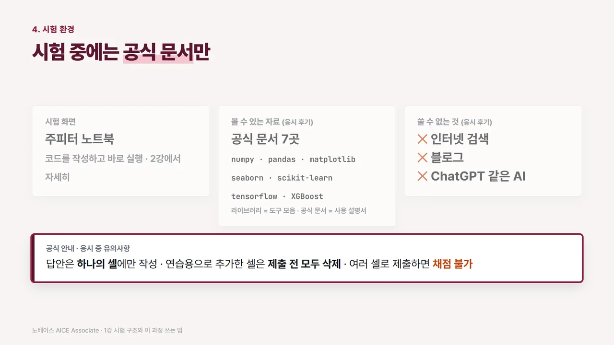

시험 구조와 이 과정 쓰는 법
1강 영상에서 배운 내용을 읽기 쉽게 정리했어요. 코드의 결과는 모두 실제로 실행한 값이에요. 인쇄하거나 「PDF로 저장」하면 교재처럼 볼 수 있어요.
01오늘의 핵심
02AICE Associate 는 어떤 시험인가요
AICE 는 KT 가 운영하는 인공지능 활용 능력 시험이에요. 그중 Associate 는 직접 코드를 작성해서 문제를 푸는 등급이에요. 코드는 컴퓨터에게 시킬 일을 컴퓨터가 알아들을 수 있는 언어로 적은 글이고, 이 시험은 파이썬이라는 언어를 써요.
| 항목 | 내용 |
|---|---|
| 시험 시간 | 90분 |
| 문항 수 | 14문제 |
| 합격 기준 | 100점 만점에 80점 이상 |
| 응시료 · 유효 기간 | 8만 원 · 3년 |
2026년 11월 기준, AICE 공식 홈페이지 수험자 가이드에서 확인한 내용이에요. 응시 전에 공식 홈페이지에서 다시 확인하세요.
0314문제는 무엇을 묻나요

한마디로 데이터를 분석해 의미 있는 정보를 찾아내는 능력, 그리고 과거 데이터를 바탕으로 앞으로 일어날 일을 예측하는 능력을 평가해요. 데이터를 학습해 미래를 예측하도록 만든 프로그램을 모델이라고 해요.
- 데이터 살펴보기: 데이터는 엑셀 표처럼 줄과 칸으로 정리된 기록이에요. 파일을 열어 표와 그래프로 어떤 데이터인지 살펴봐요.
- 전처리: 표를 모델이 쓸 수 있게 다듬는 일이에요. 비어 있는 나이 칸, 200살처럼 말이 안 되는 값을 고치고, 남자·여자처럼 글자로 된 값을 숫자로 바꿔요.
- 모델 학습과 평가: 뒤의 강의에서 하나씩 배워요. 지금은 전체가 순서대로 이어진다는 것만 기억하면 돼요.
공식 샘플 문제 두 개
| 샘플 | 예측하는 것 | 방식 |
|---|---|---|
| 와인 데이터 | 품질 등급 | 분류: 정해진 등급 중 하나를 고르기 |
| 내비게이션 데이터 | 도착 시간 | 회귀: 몇 분처럼 숫자를 예측하기 |
04영역별 배점

| 영역 | 문항 수 | 배점 |
|---|---|---|
| 데이터 분석 | 5~6문항 | 30점 |
| 데이터 전처리 | 4~5문항 | 30점 |
| AI 모델링 | 4~5문항 | 40점 |
05문제를 푸는 세 가지 방식
먼저 낱말 두 개를 알아 둘게요. 함수는 계산기 버튼처럼, 실행하면 정해진 일을 하는 명령이에요. 옵션은 그 일을 어떤 방식으로 할지 정하는 설정이에요.
| 방식 | 하는 일 |
|---|---|
| 직접 작성 | 문제에서 요구하는 코드를 처음부터 작성해요. |
| 빈칸 채우기 | 코드가 거의 다 주어지고, 함수 이름이나 옵션 같은 일부만 비어 있어요. |
| 오류 수정 | 잘못된 코드가 주어지고, 틀린 부분을 찾아 바르게 고쳐요. |
세 가지 모두 함수 이름과 옵션 이름을 정확히 알아야 풀 수 있어요. 그래서 이 과정은 함수를 무작정 외우기보다 왜 필요한지부터 이해하는 데 시간을 써요.
06시험 환경

시험은 주피터 노트북이라는 화면에서 진행해요. 코드를 작성하고 바로 실행해서 결과를 확인할 수 있는 화면이에요(2강에서 자세히 배워요). 실행은 컴퓨터에게 이제 코드를 처리하라고 시키는 거예요.
라이브러리는 다른 사람이 만들어 둔 도구 모음이고, 공식 문서는 그 도구의 사용 설명서예요. 제가 응시했을 때는 화면에 안내된 일곱 개 라이브러리의 공식 문서만 열어 볼 수 있었고, 인터넷 검색·블로그·AI 는 쓸 수 없었어요(쓰면 부정행위로 처리될 수 있어요).
감독 환경
시험은 집에서 온라인으로 보지만 감독관의 감독을 받아요. 제가 응시했을 때는 웹캠과 마이크를 켜고, 화면을 공유하고, 옆에서 비추는 휴대폰 카메라도 연결했어요. 시작 전에는 방 전체를 한 바퀴 비춰 달라는 요청도 있었어요. 모니터를 두 대 이상 쓰거나 문제를 촬영·메모하는 것은 부정행위예요.
07실제 시험은 샘플보다 어려웠어요
제가 응시했을 때는 같은 단계라도 샘플에 나오지 않았던 함수가 나왔고, 힌트도 더 적었어요. 한 번 응시한 경험이라 시험마다 다를 수 있어요.
08이 과정을 공부하는 법
- 전체는 서른아홉 강, 여덟 개 파트예요. 오리엔테이션 다음에 파이썬 기초, 판다스, 시각화, 전처리, 머신러닝, 딥러닝을 배우고, 마지막 파트에서 샘플과 모의고사를 풀어요.
- 강의마다 노트북 세 개를 제공해요: 따라 입력(직접 코드를 입력), 확인 문제(혼자 풀기), 해설(정답과 이유).
- 영상을 보기만 하지 말고 노트북을 옆에 열어 직접 입력해 보세요. 눈으로 본 코드와 직접 입력해 본 코드는 시험장에서 떠올리는 정도가 달라요.
- 확인 문제가 나오면 영상을 멈추고 먼저 풀어 보세요. 틀려도 괜찮아요. 어디서 막혔는지 확인하는 게 중요해요.
- 하루 두 강이면 3주, 하루 한 강이면 6주 정도 걸려요. 앞에서 배운 함수는 뒤에서도 계속 나오니 처음부터 모두 외우려고 하지 않아도 돼요.